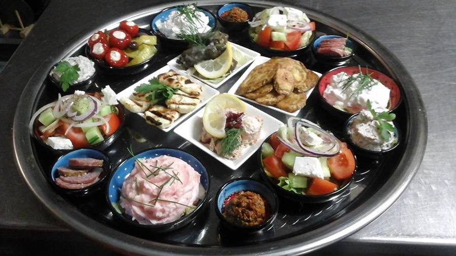
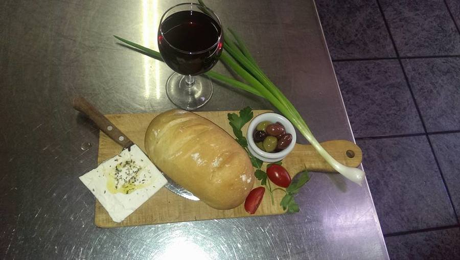
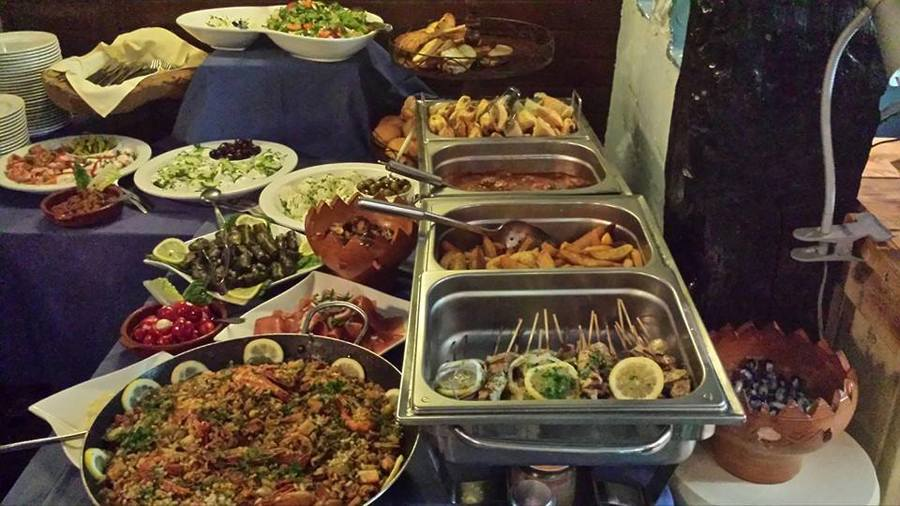
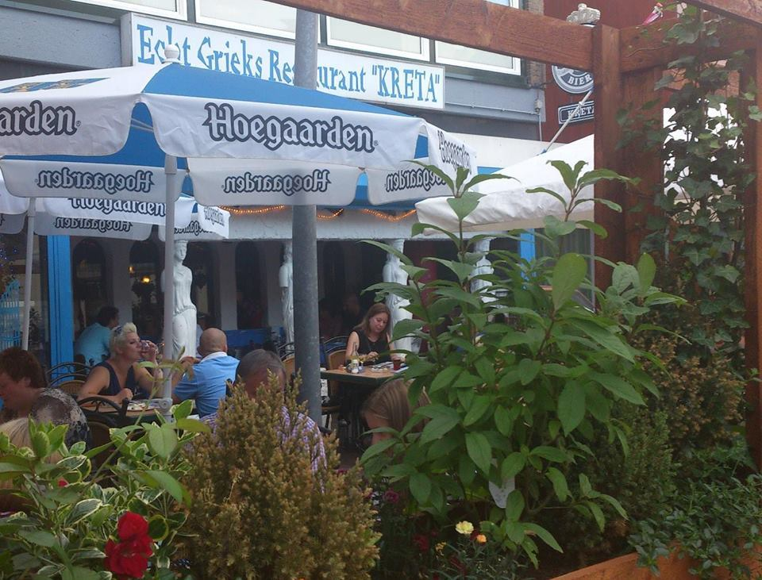
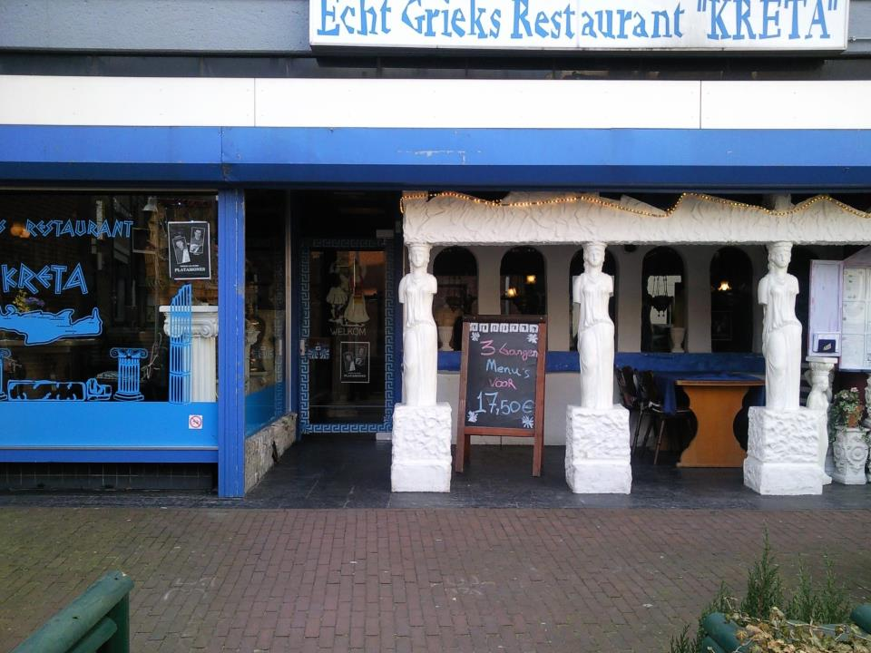

Kalós írthate!
Kreta
Grieks familierestaurant in Ede. Gekookt zoals een goede Griekse huisvrouw dat doet, met brood dat oma zelf bakt.
Alle generaties dragen een steentje bij
Kreta is een familiebedrijf waar, naar Griekse traditie, iedereen meehelpt. Yiayiá (oma) bakt met hart en ziel het brood dat u steeds ovenvers geserveerd krijgt. Ta paidiá (de kinderen) helpen af en toe een handje mee, zodat ook op drukke dagen alle gasten de aandacht krijgen die ze gewend zijn.
De twee schoonzussen Angela en Zografiá zwaaien samen de scepter in de keuken en het restaurant. Zij koken nog spitikó: volgens de regels van de goede Griekse huisvrouw, uitsluitend met de beste producten.
Griekse live muziek
Regelmatig organiseren we een avond met Griekse live muziek. Bel ons of kijk op Facebook wanneer de volgende is.




De saladebar
Bij de vis-, oven-, grill- en vegetarische gerechten en de speciale schotels kunt u gebruik maken van onze saladebar.
Loopt u graag een tweede keer, want verspillen doet ons zo zeer!
Sfeer


Openingstijden
Contact
Grieks Restaurant KretaNieuwe Stationsstraat 30
6711 AG Ede